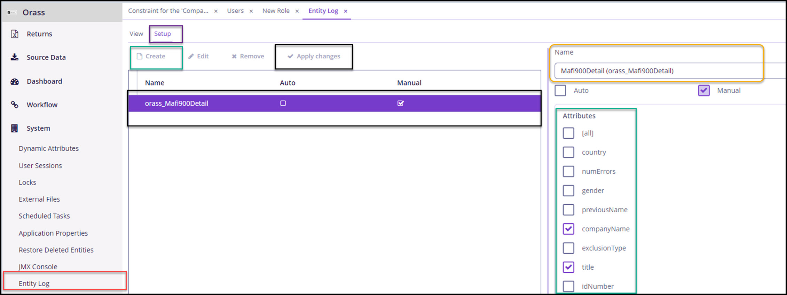
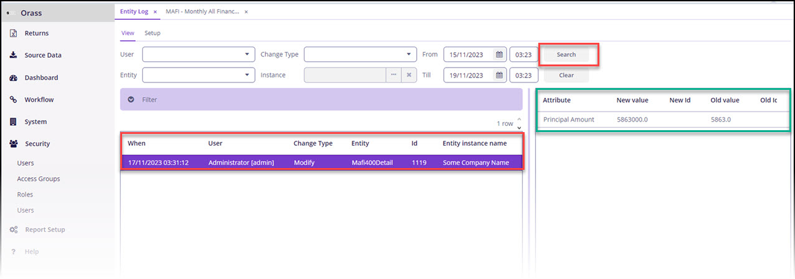

Auditing
ORASS returns provide critical supervisory data to Bank of Ghana. Excenit RSS provides a fine-grained audit tracking feature. When activated, all changes to data loading are logged. Due to the resource cost of fine-grained auditing, they are disabled by default and must be explicitly activated for each table.
To setup audit logging:
-
Go to System→ Entity Log.
-
Navigate to the Setup tab and click
Create. -
In the
Namedropdown box. select the RSS table to be audited. Tables are named after the returns. -
Select the attributes for which we want to log and click
Saveto close. -
Then click
Apply Changes. -
The table should be listed in the middle pane.

-
Go to System→ Entity Log
-
Switch to the
Viewtab and clickSearch(without any other criteria) to load entities that have their logging configured. -
The log shows that the entity
Mafi400Detail,whomodified, thetypeof change (Insert, Modify, Delete), the primary key (or ID). In addition, the log tracks the fields (Attribute Name) and values (Old value) that changed (New value).
